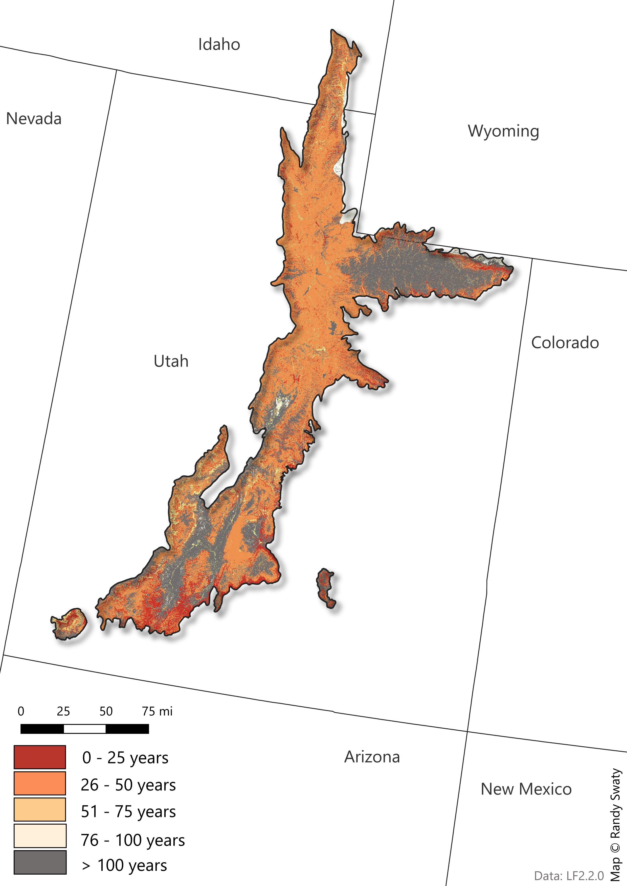

Past: Historical Ecosystems
LANDFIRE’s Biophysical Settings (BpSs)
BpS models represent the vegetation system that may have been dominant on the landscape prior to Euro-American settlement. These models are based on a combination of the current environment and an approximation of the historical disturbance regime. Read more.
BpS models represent the vegetation system that may have been dominant on the landscape prior to Euro-American settlement. These models are based on a combination of the current environment and an approximation of the historical disturbance regime. Read more.
Check out this 3-minute tutorial for a quick refresher on the basics of Biophysical Settings Models.
Use this page as a starting point to explore the most prevalent BpSs in the SRFSN Colorado Plateau Subregion. In addition to the charts and maps, the historical disturbance data can be directly accessed using this site.
Summary
- LANDFIRE mapped 70 unique BpSs in the Wasatch and Uinta Mountains Subregion. The top 10 represented ~70% of the area.
- Prior to European colonization the Inter-Mountain Basins Montane Sagebrush Steppe-Mountain Big Sagebrush was dominant, comprising ~15% of the landscape.
- LANDFIRE models estimate that historically there would have been > 240k acres of fire every year prior to European colonization.
Scroll down to explore the “historical disturbances per ecosystem” using the interactive web app.
Most Prevalent Biophysical Settings

Historic Annual Acres Burned (per ecosystem)

Top Historical Fire Regimes

Historical Disturbances (per ecosystem)
Data Table
| ZONE | BPS_MODEL | BPS_NAME | GROUPVEG | FRI_REPLAC | FRI_MIXED | FRI_SURFAC | FRG_NEW | ACRES | REL_PERCENT |
|---|---|---|---|---|---|---|---|---|---|
| 16 | 11261_16_23_24 | Inter-Mountain Basins Montane Sagebrush Steppe-Mountain Big Sagebrush | Shrubland | 49 | NA | NA | IV-A | 1,611,932 | 14.3 |
| 16 | 10612_16_23 | Inter-Mountain Basins Aspen-Mixed Conifer Forest and Woodland-High Elevation | Hardwood-Conifer | 70 | 60 | NA | I-C | 1,145,756 | 10.1 |
| 16 | 10110_16_23_24 | Rocky Mountain Aspen Forest and Woodland | Hardwood | 59 | 50 | NA | I-C | 1,105,800 | 9.8 |
| 16 | 10550_16_23_24 | Rocky Mountain Subalpine Dry-Mesic Spruce-Fir Forest and Woodland | Conifer | 214 | 7,242 | NA | V-A | 1,071,284 | 9.5 |
| 16 | 10160_16_23_24_25 | Colorado Plateau Pinyon-Juniper Woodland | Conifer | 435 | 195 | 2,265 | III-B | 578,902 | 5.1 |
| 16 | 11071_16 | Rocky Mountain Gambel Oak-Mixed Montane Shrubland -Continuous | Shrubland | 57 | 162 | NA | III-A | 523,066 | 4.6 |
| 16 | 10611_16_23_24 | Inter-Mountain Basins Aspen-Mixed Conifer Forest and Woodland-Low Elevation | Hardwood-Conifer | 43 | 13 | NA | I-B | 445,962 | 3.9 |
| 16 | 10120_16_27 | Rocky Mountain Bigtooth Maple Ravine Woodland | Hardwood | 136 | 82 | NA | III-A | 434,585 | 3.8 |
| 16 | 10520_16_23_24 | Southern Rocky Mountain Mesic Montane Mixed Conifer Forest and Woodland | Conifer | 180 | 89 | 74 | I-C | 421,376 | 3.7 |
| 16 | 11262_16_23 | Inter-Mountain Basins Montane Sagebrush Steppe-Low Sagebrush | Shrubland | 219 | NA | NA | V-A | 417,613 | 3.7 |
| 16 | 11590_16_23_24_26 | Rocky Mountain Montane Riparian Systems | Riparian | 270 | NA | 79 | III-A | 372,563 | 3.3 |
| 16 | 10804_6_12_15_16_17_18_23_24_25 | Inter-Mountain Basins Big Sagebrush Shrubland-Upland | Shrubland | 120 | NA | NA | IV-B | 348,903 | 3.1 |
| 16 | 10540_16_23_24 | Southern Rocky Mountain Ponderosa Pine Woodland | Conifer | 280 | 226 | 20 | I-C | 324,333 | 2.9 |
| 16 | 10510_15_16_17_22_23_24_25 | Southern Rocky Mountain Dry-Mesic Montane Mixed Conifer Forest and Woodland | Conifer | 90 | 77 | 14 | I-B | 304,083 | 2.7 |
| 16 | 10620_16_23 | Inter-Mountain Basins Curl-leaf Mountain Mahogany Woodland and Shrubland | Shrubland | 246 | 137 | 228 | III-A | 293,005 | 2.6 |
| 16 | 11072_16 | Rocky Mountain Gambel Oak-Mixed Montane Shrubland-Patchy | Shrubland | 153 | 51 | NA | III-A | 281,677 | 2.5 |
| NA | NA | Barren-Rock/Sand/Clay | Barren-Rock/Sand/Clay | NA | NA | NA | NA | 223,574 | 2.0 |
| 16 | 10500_16_23_28 | Rocky Mountain Lodgepole Pine Forest | Conifer | 152 | NA | 640 | IV-B | 198,050 | 1.8 |
| 16 | 10060 | Rocky Mountain Alpine/Montane Sparsely Vegetated Systems | Sparse | NA | NA | NA | NA | 164,164 | 1.5 |
| 16 | 11450_16 | Rocky Mountain Subalpine-Montane Mesic Meadow | Grassland | 40 | 160 | NA | II-C | 100,635 | 0.9 |
| 22 | 11260_22 | Inter-Mountain Basins Montane Sagebrush Steppe | Shrubland | 86 | NA | NA | IV-A | 93,835 | 0.8 |
| NA | NA | Open Water | Open Water | NA | NA | NA | NA | 71,643 | 0.6 |
| 21 | 11260_21 | Inter-Mountain Basins Montane Sagebrush Steppe | Shrubland | 50 | NA | NA | IV-A | 61,759 | 0.5 |
| 16 | 10860_13_16_17_18_21_23 | Rocky Mountain Lower Montane-Foothill Shrubland | Shrubland | 102 | 28 | NA | I-C | 61,307 | 0.5 |
| 16 | 10803_6_12_15_16_17_18_23_24_25 | Inter-Mountain Basins Big Sagebrush Shrubland-Semi-Desert | Shrubland | 151 | NA | NA | IV-B | 57,939 | 0.5 |
| 22 | 10802_21_22_28 | Inter-Mountain Basins Big Sagebrush Shrubland-Wyoming Big Sagebrush | Shrubland | 98 | NA | NA | IV-A | 42,713 | 0.4 |
| 16 | 11460_15_16_23_24_25_28 | Southern Rocky Mountain Montane-Subalpine Grassland | Grassland | 20 | NA | 21 | I-B | 50,443 | 0.4 |
| 16 | 10640_15_16_17_23_24_27_28 | Colorado Plateau Mixed Low Sagebrush Shrubland | Shrubland | 239 | 119 | NA | III-A | 32,779 | 0.3 |
| 16 | 11170_16_23_24 | Southern Rocky Mountain Ponderosa Pine Savanna | Conifer | 158 | 80 | 9 | I-B | 33,511 | 0.3 |
| 16 | 11350_16_23_24 | Inter-Mountain Basins Semi-Desert Grassland | Grassland | 25 | NA | NA | II-C | 33,405 | 0.3 |
| 23 | 10160_16_23_24_25 | Colorado Plateau Pinyon-Juniper Woodland | Conifer | 435 | 195 | 2,265 | III-B | 36,483 | 0.3 |
| 16 | 10190_6_7_9_12_16_17_18_19 | Great Basin Pinyon-Juniper Woodland | Conifer | 865 | 898 | NA | V-A | 18,053 | 0.2 |
| 16 | 10700_16 | Rocky Mountain Alpine Dwarf-Shrubland | Shrubland | 227 | NA | NA | V-A | 20,402 | 0.2 |
| 16 | 10810_15_16_23_24_28 | Inter-Mountain Basins Mixed Salt Desert Scrub | Shrubland | 616 | NA | NA | V-B | 28,124 | 0.2 |
| 16 | 11030_6_7_12_13_16_17_23 | Great Basin Semi-Desert Chaparral | Shrubland | 50 | NA | NA | IV-A | 25,439 | 0.2 |
| 16 | 11250_6_12_13_15_16_17_18_23_24_25_28 | Inter-Mountain Basins Big Sagebrush Steppe | Shrubland | 117 | NA | NA | IV-B | 25,117 | 0.2 |
| 16 | 11270_16_23_24_25 | Inter-Mountain Basins Semi-Desert Shrub-Steppe | Shrubland | 105 | NA | NA | IV-B | 26,562 | 0.2 |
| 16 | 11600_16 | Rocky Mountain Subalpine/Upper Montane Riparian Systems | Riparian | 271 | NA | 80 | III-A | 27,893 | 0.2 |
| 16 | 10660_16_23_24 | Inter-Mountain Basins Mat Saltbush Shrubland | Shrubland | NA | NA | NA | NA | 9,423 | 0.1 |
| 22 | 10160_22 | Colorado Plateau Pinyon-Juniper Woodland | Conifer | 458 | 215 | 3,310 | III-B | 11,266 | 0.1 |
| 22 | 11590_22 | Rocky Mountain Montane Riparian Systems | Riparian | 271 | NA | 79 | III-A | 9,774 | 0.1 |
| 16 | 10790_6_9_10_12_16_17_18 | Great Basin Xeric Mixed Sagebrush Shrubland | Shrubland | 94 | 831 | NA | IV-A | 15,207 | 0.1 |
| 16 | 11530_16_23_24_25_27 | Inter-Mountain Basins Greasewood Flat | Shrubland | 208 | NA | NA | V-A | 16,520 | 0.1 |
| 23 | 10540_16_23_24 | Southern Rocky Mountain Ponderosa Pine Woodland | Conifer | 280 | 226 | 20 | I-C | 11,854 | 0.1 |
| 23 | 11070_23_24 | Rocky Mountain Gambel Oak-Mixed Montane Shrubland | Shrubland | 51 | 150 | NA | III-A | 6,676 | 0.1 |
| 23 | 11262_16_23 | Inter-Mountain Basins Montane Sagebrush Steppe-Low Sagebrush | Shrubland | 219 | NA | NA | V-A | 5,942 | 0.1 |
| NA | NA | Perennial Ice/Snow | Perennial Ice/Snow | NA | NA | NA | NA | 92 | 0.0 |
| 13 | 10040 | North American Warm Desert Sparsely Vegetated Systems | Sparse | NA | NA | NA | NA | 504 | 0.0 |
| 16 | 10820_12_15_16_17_23_24 | Mojave Mid-Elevation Mixed Desert Scrub | Shrubland | 815 | NA | NA | V-B | 614 | 0.0 |
| 21 | 10010 | Inter-Mountain Basins Sparsely Vegetated Systems | Sparse | NA | NA | NA | NA | 20 | 0.0 |
| 13 | 10010 | Inter-Mountain Basins Sparsely Vegetated Systems | Sparse | NA | NA | NA | NA | 46 | 0.0 |
| 13 | 10160_13_14 | Colorado Plateau Pinyon-Juniper Woodland | Conifer | 483 | 340 | 768 | III-B | 482 | 0.0 |
| 13 | 10190_13_14 | Great Basin Pinyon-Juniper Woodland | Conifer | 474 | 337 | 780 | III-B | 105 | 0.0 |
| 13 | 10540_13_14 | Southern Rocky Mountain Ponderosa Pine Woodland | Conifer | 254 | 39 | 28 | I-B | 3 | 0.0 |
| 13 | 10610_13 | Inter-Mountain Basins Aspen-Mixed Conifer Forest and Woodland | Hardwood-Conifer | 81 | 55 | NA | I-C | 1 | 0.0 |
| 13 | 10800_13_14 | Inter-Mountain Basins Big Sagebrush Shrubland | Shrubland | 111 | NA | NA | IV-B | 141 | 0.0 |
| 13 | 10820_4_13 | Mojave Mid-Elevation Mixed Desert Scrub | Shrubland | 399 | NA | NA | V-A | 5,026 | 0.0 |
| 13 | 10870_4_6_12_13_14_15_17_24_25 | Sonora-Mojave Creosotebush-White Bursage Desert Scrub | Shrubland | 329 | NA | NA | V-A | 29 | 0.0 |
| 13 | 10930_13_15_16_23_24_28 | Southern Colorado Plateau Sand Shrubland | Shrubland | 220 | NA | NA | V-A | 21 | 0.0 |
| 13 | 11030_6_7_12_13_16_17_23 | Great Basin Semi-Desert Chaparral | Shrubland | 50 | NA | NA | IV-A | 6 | 0.0 |
| 13 | 11540_13 | Inter-Mountain Basins Montane Riparian Systems | Riparian | 68 | NA | NA | IV-A | 100 | 0.0 |
| 13 | 11552_13_14_15 | North American Warm Desert Riparian Systems-Stringers | Riparian | 735 | NA | NA | V-B | 153 | 0.0 |
| 21 | 10110_21 | Rocky Mountain Aspen Forest and Woodland | Hardwood | 110 | NA | NA | IV-B | 5,268 | 0.0 |
| 21 | 10120_17_18_21 | Rocky Mountain Bigtooth Maple Ravine Woodland | Hardwood | 135 | 81 | NA | III-A | 131 | 0.0 |
| 21 | 10460_21 | Northern Rocky Mountain Subalpine Woodland and Parkland | Conifer | 515 | 324 | NA | III-B | 28 | 0.0 |
| 21 | 10490_19_20_21_23_28_29 | Rocky Mountain Foothill Limber Pine-Juniper Woodland | Conifer | 385 | NA | NA | V-A | 201 | 0.0 |
| 21 | 10520_21 | Southern Rocky Mountain Mesic Montane Mixed Conifer Forest and Woodland | Conifer | 185 | 90 | 72 | I-C | 93 | 0.0 |
| 21 | 10550_21_22 | Rocky Mountain Subalpine Dry-Mesic Spruce-Fir Forest and Woodland | Conifer | 333 | NA | NA | V-A | 1,061 | 0.0 |
| 21 | 10560_21_22 | Rocky Mountain Subalpine Mesic-Wet Spruce-Fir Forest and Woodland | Conifer | 432 | 895 | NA | V-A | 2,185 | 0.0 |
| 21 | 10620_10_19_21_29_31 | Inter-Mountain Basins Curl-leaf Mountain Mahogany Woodland and Shrubland | Shrubland | 286 | 151 | 232 | III-A | 6 | 0.0 |
| 21 | 10801_21_22_28 | Inter-Mountain Basins Big Sagebrush Shrubland-Basin Big Sagebrush | Shrubland | 72 | NA | NA | IV-A | 13 | 0.0 |
| 21 | 11060_20_21_29 | Northern Rocky Mountain Montane-Foothill Deciduous Shrubland | Shrubland | 79 | NA | NA | IV-A | 1 | 0.0 |
| 21 | 11240_10_12_17_18_19_21 | Columbia Plateau Low Sagebrush Steppe | Shrubland | 201 | NA | NA | V-A | 6 | 0.0 |
| 21 | 11390_21 | Northern Rocky Mountain Lower Montane-Foothill-Valley Grassland | Grassland | 32 | NA | NA | II-C | 10 | 0.0 |
| 21 | 11450_21 | Rocky Mountain Subalpine-Montane Mesic Meadow | Grassland | 40 | NA | NA | IV-A | 1 | 0.0 |
| 21 | 11590_21 | Rocky Mountain Montane Riparian Systems | Riparian | 180 | NA | NA | IV-B | 3,919 | 0.0 |
| 21 | 11600_21 | Rocky Mountain Subalpine/Upper Montane Riparian Systems | Riparian | 335 | 2,775 | NA | V-A | 4,046 | 0.0 |
| 21 | 11610_21 | Northern Rocky Mountain Conifer Swamp | Conifer | 401 | NA | NA | V-A | 85 | 0.0 |
| 21 | 11660_21 | Middle Rocky Mountain Montane Douglas-fir Forest and Woodland | Conifer | 296 | 46 | NA | III-A | 4,241 | 0.0 |
| 22 | 10010 | Inter-Mountain Basins Sparsely Vegetated Systems | Sparse | NA | NA | NA | NA | 44 | 0.0 |
| 22 | 10110_22 | Rocky Mountain Aspen Forest and Woodland | Hardwood | 163 | NA | NA | IV-B | 5,140 | 0.0 |
| 22 | 10490_16_22 | Rocky Mountain Foothill Limber Pine-Juniper Woodland | Conifer | 216 | NA | NA | V-A | 3,577 | 0.0 |
| 22 | 10500_22 | Rocky Mountain Lodgepole Pine Forest | Conifer | 169 | NA | NA | IV-B | 177 | 0.0 |
| 22 | 10510_15_16_17_22_23_24_25 | Southern Rocky Mountain Dry-Mesic Montane Mixed Conifer Forest and Woodland | Conifer | 90 | 77 | 14 | I-B | 106 | 0.0 |
| 22 | 10540_22 | Southern Rocky Mountain Ponderosa Pine Woodland | Conifer | 165 | 49 | 19 | I-B | 733 | 0.0 |
| 22 | 10550_21_22 | Rocky Mountain Subalpine Dry-Mesic Spruce-Fir Forest and Woodland | Conifer | 333 | NA | NA | V-A | 1,196 | 0.0 |
| 22 | 10610_22_27_28 | Inter-Mountain Basins Aspen-Mixed Conifer Forest and Woodland | Hardwood-Conifer | 78 | 73 | 126 | I-C | 107 | 0.0 |
| 22 | 10620_22_28 | Inter-Mountain Basins Curl-leaf Mountain Mahogany Woodland and Shrubland | Shrubland | 229 | 78 | NA | III-A | 490 | 0.0 |
| 22 | 10660_22 | Inter-Mountain Basins Mat Saltbush Shrubland | Shrubland | NA | NA | NA | NA | 40 | 0.0 |
| 22 | 10720_22_29 | Wyoming Basins Dwarf Sagebrush Shrubland and Steppe | Shrubland | 331 | NA | NA | V-A | 112 | 0.0 |
| 22 | 10801_21_22_28 | Inter-Mountain Basins Big Sagebrush Shrubland-Basin Big Sagebrush | Shrubland | 72 | NA | NA | IV-A | 2,600 | 0.0 |
| 22 | 10810_22 | Inter-Mountain Basins Mixed Salt Desert Scrub | Shrubland | 450 | NA | NA | V-A | 163 | 0.0 |
| 22 | 10861_22 | Rocky Mountain Lower Montane-Foothill Shrubland-No True Mountain Mahogany | Shrubland | 89 | NA | NA | IV-A | 25 | 0.0 |
| 22 | 10862_22 | Rocky Mountain Lower Montane-Foothill Shrubland-True Mountain Mahogany | Shrubland | 106 | NA | NA | IV-B | 84 | 0.0 |
| 22 | 11150_21_22 | Inter-Mountain Basins Juniper Savanna | Conifer | 355 | 212 | 123 | III-A | 285 | 0.0 |
| 22 | 11270_22 | Inter-Mountain Basins Semi-Desert Shrub-Steppe | Shrubland | 448 | NA | NA | V-A | 1 | 0.0 |
| 22 | 11350_22 | Inter-Mountain Basins Semi-Desert Grassland | Grassland | 25 | NA | NA | II-C | 44 | 0.0 |
| 22 | 11390_22 | Northern Rocky Mountain Lower Montane-Foothill-Valley Grassland | Grassland | 66 | NA | NA | IV-A | 1 | 0.0 |
| 22 | 11530_20_22_29_30 | Inter-Mountain Basins Greasewood Flat | Shrubland | 207 | NA | NA | V-A | 1,196 | 0.0 |
| 22 | 11620_22 | Western Great Plains Floodplain Systems | Riparian | 571 | 125 | NA | III-B | 2 | 0.0 |
| 22 | 11660_22 | Middle Rocky Mountain Montane Douglas-fir Forest and Woodland | Conifer | 207 | 53 | 138 | I-C | 449 | 0.0 |
| 16 | 10010 | Inter-Mountain Basins Sparsely Vegetated Systems | Sparse | NA | NA | NA | NA | 3,790 | 0.0 |
| 16 | 10490_16_22 | Rocky Mountain Foothill Limber Pine-Juniper Woodland | Conifer | 216 | NA | NA | V-A | 2 | 0.0 |
| 16 | 10560_16_23 | Rocky Mountain Subalpine Mesic-Wet Spruce-Fir Forest and Woodland | Conifer | 217 | 6,998 | NA | V-A | 2,541 | 0.0 |
| 16 | 10570_12_16 | Rocky Mountain Subalpine-Montane Limber-Bristlecone Pine Woodland | Conifer | 508 | NA | 199 | III-B | 369 | 0.0 |
| 16 | 10780_16_23_24_25 | Colorado Plateau Blackbrush-Mormon-tea Shrubland | Shrubland | 146 | 162 | NA | III-A | 512 | 0.0 |
| 16 | 10930_13_15_16_23_24_28 | Southern Colorado Plateau Sand Shrubland | Shrubland | 220 | NA | NA | V-A | 237 | 0.0 |
| 16 | 11020_13_15_16_23_24 | Colorado Plateau Pinyon-Juniper Shrubland | Conifer | 333 | 222 | 127 | III-A | 5,454 | 0.0 |
| 16 | 11150_15_16_23_24 | Inter-Mountain Basins Juniper Savanna | Conifer | 333 | 218 | 126 | III-A | 1,470 | 0.0 |
| 16 | 11440_12_16_19_28 | Rocky Mountain Alpine Turf | Grassland | 207 | NA | NA | V-A | 1,164 | 0.0 |
| 16 | 11540_6_12_16_17 | Inter-Mountain Basins Montane Riparian Systems | Riparian | 378 | NA | NA | V-A | 51 | 0.0 |
| 23 | 10010 | Inter-Mountain Basins Sparsely Vegetated Systems | Sparse | NA | NA | NA | NA | 2,953 | 0.0 |
| 23 | 10060 | Rocky Mountain Alpine/Montane Sparsely Vegetated Systems | Sparse | NA | NA | NA | NA | 331 | 0.0 |
| 23 | 10110_16_23_24 | Rocky Mountain Aspen Forest and Woodland | Hardwood | 59 | 50 | NA | I-C | 2,789 | 0.0 |
| 23 | 10510_15_16_17_22_23_24_25 | Southern Rocky Mountain Dry-Mesic Montane Mixed Conifer Forest and Woodland | Conifer | 90 | 77 | 14 | I-B | 4,605 | 0.0 |
| 23 | 10520_16_23_24 | Southern Rocky Mountain Mesic Montane Mixed Conifer Forest and Woodland | Conifer | 180 | 89 | 74 | I-C | 2,530 | 0.0 |
| 23 | 10550_16_23_24 | Rocky Mountain Subalpine Dry-Mesic Spruce-Fir Forest and Woodland | Conifer | 214 | 7,242 | NA | V-A | 2,498 | 0.0 |
| 23 | 10611_16_23_24 | Inter-Mountain Basins Aspen-Mixed Conifer Forest and Woodland-Low Elevation | Hardwood-Conifer | 43 | 13 | NA | I-B | 1,997 | 0.0 |
| 23 | 10612_16_23 | Inter-Mountain Basins Aspen-Mixed Conifer Forest and Woodland-High Elevation | Hardwood-Conifer | 70 | 60 | NA | I-C | 424 | 0.0 |
| 23 | 10620_16_23 | Inter-Mountain Basins Curl-leaf Mountain Mahogany Woodland and Shrubland | Shrubland | 246 | 137 | 228 | III-A | 216 | 0.0 |
| 23 | 10640_15_16_17_23_24_27_28 | Colorado Plateau Mixed Low Sagebrush Shrubland | Shrubland | 239 | 119 | NA | III-A | 79 | 0.0 |
| 23 | 10660_16_23_24 | Inter-Mountain Basins Mat Saltbush Shrubland | Shrubland | NA | NA | NA | NA | 11 | 0.0 |
| 23 | 10780_16_23_24_25 | Colorado Plateau Blackbrush-Mormon-tea Shrubland | Shrubland | 146 | 162 | NA | III-A | 35 | 0.0 |
| 23 | 10810_15_16_23_24_28 | Inter-Mountain Basins Mixed Salt Desert Scrub | Shrubland | 616 | NA | NA | V-B | 439 | 0.0 |
| 23 | 10860_13_16_17_18_21_23 | Rocky Mountain Lower Montane-Foothill Shrubland | Shrubland | 102 | 28 | NA | I-C | 1,355 | 0.0 |
| 23 | 11020_13_15_16_23_24 | Colorado Plateau Pinyon-Juniper Shrubland | Conifer | 333 | 222 | 127 | III-A | 1 | 0.0 |
| 23 | 11040_23_24 | Mogollon Chaparral | Shrubland | 47 | 370 | NA | IV-A | 1 | 0.0 |
| 23 | 11150_15_16_23_24 | Inter-Mountain Basins Juniper Savanna | Conifer | 333 | 218 | 126 | III-A | 17 | 0.0 |
| 23 | 11170_16_23_24 | Southern Rocky Mountain Ponderosa Pine Savanna | Conifer | 158 | 80 | 9 | I-B | 9 | 0.0 |
| 23 | 11261_16_23_24 | Inter-Mountain Basins Montane Sagebrush Steppe-Mountain Big Sagebrush | Shrubland | 49 | NA | NA | IV-A | 737 | 0.0 |
| 23 | 11270_16_23_24_25 | Inter-Mountain Basins Semi-Desert Shrub-Steppe | Shrubland | 105 | NA | NA | IV-B | 7 | 0.0 |
| 23 | 11350_16_23_24 | Inter-Mountain Basins Semi-Desert Grassland | Grassland | 25 | NA | NA | II-C | 2 | 0.0 |
| 23 | 11460_15_16_23_24_25_28 | Southern Rocky Mountain Montane-Subalpine Grassland | Grassland | 20 | NA | 21 | I-B | 55 | 0.0 |
| 23 | 11530_16_23_24_25_27 | Inter-Mountain Basins Greasewood Flat | Shrubland | 208 | NA | NA | V-A | 45 | 0.0 |
| 23 | 11590_16_23_24_26 | Rocky Mountain Montane Riparian Systems | Riparian | 270 | NA | 79 | III-A | 4,002 | 0.0 |
| 23 | 11600_23 | Rocky Mountain Subalpine/Upper Montane Riparian Systems | Riparian | 274 | NA | 79 | III-A | 1 | 0.0 |
| 17 | 10010 | Inter-Mountain Basins Sparsely Vegetated Systems | Sparse | NA | NA | NA | NA | 84 | 0.0 |
| 17 | 10110_6_10_12_17_18_19 | Rocky Mountain Aspen Forest and Woodland | Hardwood | 68 | 57 | NA | I-C | 0 | 0.0 |
| 17 | 10120_17_18_21 | Rocky Mountain Bigtooth Maple Ravine Woodland | Hardwood | 135 | 81 | NA | III-A | 226 | 0.0 |
| 17 | 10160_17 | Colorado Plateau Pinyon-Juniper Woodland | Conifer | 427 | 194 | 2,177 | III-B | 1,395 | 0.0 |
| 17 | 10190_6_7_9_12_16_17_18_19 | Great Basin Pinyon-Juniper Woodland | Conifer | 865 | 898 | NA | V-A | 1,845 | 0.0 |
| 17 | 10520_17 | Southern Rocky Mountain Mesic Montane Mixed Conifer Forest and Woodland | Conifer | 184 | 91 | 72 | I-C | 6 | 0.0 |
| 17 | 10540_17 | Southern Rocky Mountain Ponderosa Pine Woodland | Conifer | 257 | 39 | 28 | I-B | 21 | 0.0 |
| 17 | 10610_8_9_17 | Inter-Mountain Basins Aspen-Mixed Conifer Forest and Woodland | Hardwood-Conifer | 68 | 44 | NA | I-C | 0 | 0.0 |
| 17 | 10620_6_12_17_18 | Inter-Mountain Basins Curl-leaf Mountain Mahogany Woodland and Shrubland | Shrubland | 288 | 149 | 238 | III-A | 113 | 0.0 |
| 17 | 10790_6_9_10_12_16_17_18 | Great Basin Xeric Mixed Sagebrush Shrubland | Shrubland | 94 | 831 | NA | IV-A | 391 | 0.0 |
| 17 | 10810_6_12_13_17 | Inter-Mountain Basins Mixed Salt Desert Scrub | Shrubland | 1,978 | NA | NA | V-B | 38 | 0.0 |
| 17 | 10820_12_15_16_17_23_24 | Mojave Mid-Elevation Mixed Desert Scrub | Shrubland | 815 | NA | NA | V-B | 87 | 0.0 |
| 17 | 10860_13_16_17_18_21_23 | Rocky Mountain Lower Montane-Foothill Shrubland | Shrubland | 102 | 28 | NA | I-C | 10 | 0.0 |
| 17 | 11030_6_7_12_13_16_17_23 | Great Basin Semi-Desert Chaparral | Shrubland | 50 | NA | NA | IV-A | 693 | 0.0 |
| 17 | 11040_17 | Mogollon Chaparral | Shrubland | 50 | NA | NA | IV-A | 40 | 0.0 |
| 17 | 11070_17 | Rocky Mountain Gambel Oak-Mixed Montane Shrubland | Shrubland | 153 | 52 | NA | III-A | 863 | 0.0 |
| 17 | 11080_17 | Sonora-Mojave Semi-Desert Chaparral | Shrubland | 50 | NA | NA | IV-A | 273 | 0.0 |
| 17 | 11150_17 | Inter-Mountain Basins Juniper Savanna | Conifer | 815 | 428 | 553 | III-B | 0 | 0.0 |
| 17 | 11240_10_12_17_18_19_21 | Columbia Plateau Low Sagebrush Steppe | Shrubland | 201 | NA | NA | V-A | 69 | 0.0 |
| 17 | 11260_6_12_17_18_28 | Inter-Mountain Basins Montane Sagebrush Steppe | Shrubland | 49 | NA | NA | IV-A | 2,815 | 0.0 |
| 17 | 11270_10_12_13_17_18 | Inter-Mountain Basins Semi-Desert Shrub-Steppe | Shrubland | 225 | NA | NA | V-A | 841 | 0.0 |
| 17 | 11350_7_8_9_10_12_17_18 | Inter-Mountain Basins Semi-Desert Grassland | Grassland | 81 | NA | NA | IV-A | 51 | 0.0 |
| 17 | 11530_6_10_12_13_17_18_19_21 | Inter-Mountain Basins Greasewood Flat | Shrubland | 1,024 | NA | NA | V-B | 5 | 0.0 |
| 17 | 11540_6_12_16_17 | Inter-Mountain Basins Montane Riparian Systems | Riparian | 378 | NA | NA | V-A | 197 | 0.0 |
| 17 | 11590_12_17 | Rocky Mountain Montane Riparian Systems | Riparian | 379 | NA | NA | V-A | 100 | 0.0 |
| 18 | 10110_6_10_12_17_18_19 | Rocky Mountain Aspen Forest and Woodland | Hardwood | 68 | 57 | NA | I-C | 315 | 0.0 |
| 18 | 10120_17_18_21 | Rocky Mountain Bigtooth Maple Ravine Woodland | Hardwood | 135 | 81 | NA | III-A | 14 | 0.0 |
| 18 | 10190_6_7_9_12_16_17_18_19 | Great Basin Pinyon-Juniper Woodland | Conifer | 865 | 898 | NA | V-A | 54 | 0.0 |
| 18 | 10500_18 | Rocky Mountain Lodgepole Pine Forest | Conifer | 151 | NA | 643 | IV-B | 2 | 0.0 |
| 18 | 10510_18_21 | Southern Rocky Mountain Dry-Mesic Montane Mixed Conifer Forest and Woodland | Conifer | 90 | 77 | 14 | I-B | 4 | 0.0 |
| 18 | 10520_18 | Southern Rocky Mountain Mesic Montane Mixed Conifer Forest and Woodland | Conifer | 186 | 90 | 72 | I-C | 9 | 0.0 |
| 18 | 10550_18 | Rocky Mountain Subalpine Dry-Mesic Spruce-Fir Forest and Woodland | Conifer | 175 | 686 | NA | IV-B | 0 | 0.0 |
| 18 | 10610_18 | Inter-Mountain Basins Aspen-Mixed Conifer Forest and Woodland | Hardwood-Conifer | 76 | 45 | NA | I-C | 14 | 0.0 |
| 18 | 10620_6_12_17_18 | Inter-Mountain Basins Curl-leaf Mountain Mahogany Woodland and Shrubland | Shrubland | 288 | 149 | 238 | III-A | 37 | 0.0 |
| 18 | 10790_6_9_10_12_16_17_18 | Great Basin Xeric Mixed Sagebrush Shrubland | Shrubland | 94 | 831 | NA | IV-A | 2 | 0.0 |
| 18 | 11060_18 | Northern Rocky Mountain Montane-Foothill Deciduous Shrubland | Shrubland | 101 | 78 | NA | III-A | 19 | 0.0 |
| 18 | 11250_6_12_13_15_16_17_18_23_24_25_28 | Inter-Mountain Basins Big Sagebrush Steppe | Shrubland | 117 | NA | NA | IV-B | 0 | 0.0 |
| 18 | 11260_6_12_17_18_28 | Inter-Mountain Basins Montane Sagebrush Steppe | Shrubland | 49 | NA | NA | IV-A | 542 | 0.0 |
| 18 | 11540_18 | Inter-Mountain Basins Montane Riparian Systems | Riparian | 174 | NA | NA | IV-B | 6 | 0.0 |
| 18 | 11590_18 | Rocky Mountain Montane Riparian Systems | Riparian | 174 | NA | NA | IV-B | 22 | 0.0 |
| 18 | 11600_18 | Rocky Mountain Subalpine/Upper Montane Riparian Systems | Riparian | 67 | NA | 113 | III-A | 18 | 0.0 |
| 17 | 10804_6_12_15_16_17_18_23_24_25 | Inter-Mountain Basins Big Sagebrush Shrubland-Upland | Shrubland | 120 | NA | NA | IV-B | 1,842 | 0.0 |
| 23 | 10803_6_12_15_16_17_18_23_24_25 | Inter-Mountain Basins Big Sagebrush Shrubland-Semi-Desert | Shrubland | 151 | NA | NA | IV-B | 37 | 0.0 |
| 23 | 10804_6_12_15_16_17_18_23_24_25 | Inter-Mountain Basins Big Sagebrush Shrubland-Upland | Shrubland | 120 | NA | NA | IV-B | 4,441 | 0.0 |